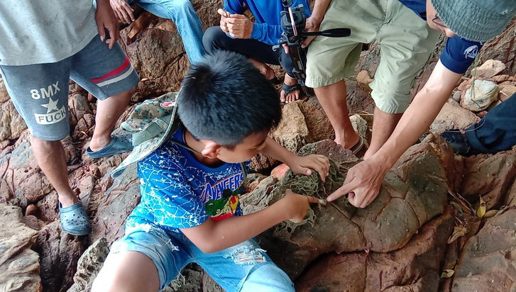
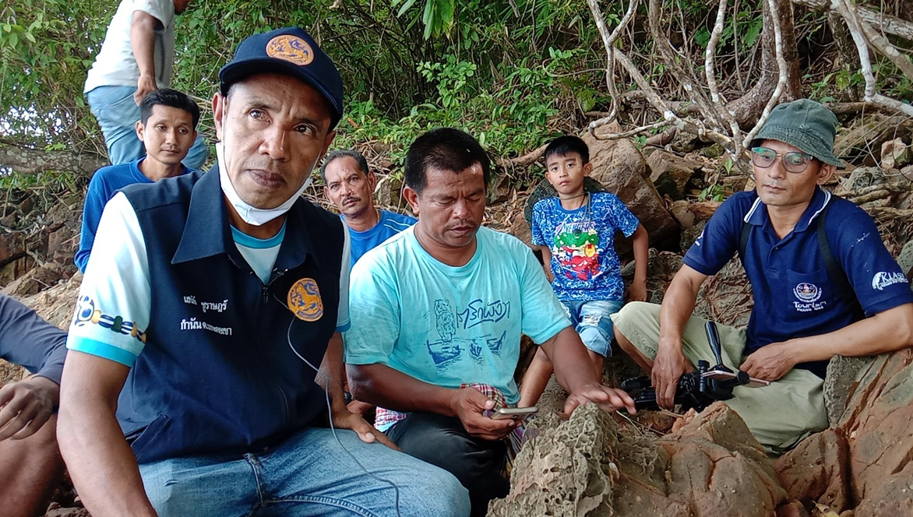
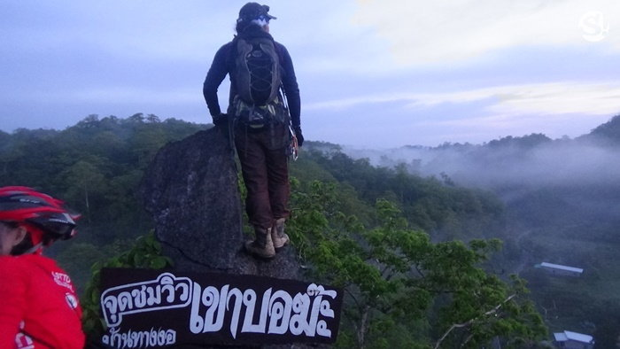
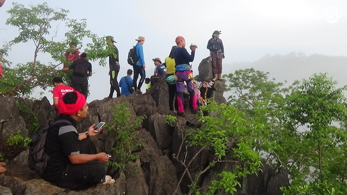

ท่องเที่ยวทั่วไทย
จากกรณีที่ นายมงคล ลุนโสภา ได้ลงโพสเนื่องจาก มีคนไปตกปลาที่เกาะคอเขา บริเวณที่ชาวบ้านเรียกว่า "หัวเขา"ตั้งอยู่ทางทิศเหนือของเกาะ อยู่ในพื้นที่ หมู่ 2 บ้านนอกนา ตรงข้ามกับ เกาะพระทอง พบเห็นหินมีลักษณะคล้ายกับนิ้วคน โผล่ขึ้นมา และได้ถ่ายภาพนำมาโพสลงในกลุ่ม "ตะกั่วป่าบ้านเรา" ผมจึงตามไปพิสูจน์เพื่อให้เห็นกับตาตัวเอง จากที่ดูในโพสดังกล่าว แล้วเทียบเคียงกับสถานที่จริง หาอยู่นานกว่าจะเจอก็ใกล้ค่ำพอดี พบว่า เป็นเรื่องจริงครับ ตามภาพที่เห็น หินโดนน้ำกัดเซาะจนมีลักษณะคล้ายนิ้วคน ชี้ไปทางทิศเหนือ ใครมาเที่ยวเกาะคอเขา อย่าลืมไปดูกันนะครับ บางทีอาจพบเจออย่างอื่น ที่มีความสำคัญทางประวัติศาสตร์ก็ได้ แล้วจะทยอยนำมาเล่าสู่กันฟังครับ
ล่าสุดนายเสน่ห์ ชูราษฎร์ กำนันตำบลเกาะคอเขา นายมนัส จาริการ ผู้ใหญ่บ้านหมู่ที่ 2 ต.เกาะคอเขา บ้านนอกนา อ.ตะกั่วป่า จ.พังงา ได้เชิญ นายมงคล ลุนโสภา เจ้าของโพสเรื่องมหัศจรรย์ของธรรมชาติ ที่พบนิ้วหิน และเป็นผู้ประสานงานประจำศูนย์ท่องเที่ยวเชิงอนุรักษ์ชุมชนเกาะคอเขา ลงพื้นที่ แหลมหัวเขา ตรงข้ามฝั่งเกาะพระทอง เพื่อให้พาบุกไปพิสูจน์ภาพ-เรื่องที่เป็นข่าวอยู่ในช่วงนี้เป็นความจริงหรือไม่ โดยใช้เวลาเดินทางเข้าไปในพื้นที่ประมาณ20 นาทีถึงจุดดังกล่าว
โดย นายมงคล ลุนโสภา เจ้าของโพสเรื่องเดินเท้าพา คณะนายเสน่ห์ ชูราษฎร์ กำนันตำบลเกาะคอเขา ตามแนวริมชายฝั่งทะเล ผ่านโขดหิน เล็ก ใหญ่ ระยะทางประมาณ 500 เมตรถึงจุดหมาย และพบกับ เนินที่ปรากฏ พบหิ้วหิน ซึ่งอยู่ใกล้กับศาลพ่อตาแป๊ะประมาณ 15 เมตร ที่ชาวประมงบนเกาะคอเขานับถือกราบไหว้กัน ดังในภาพ...เมื่อนายมงคล ลุนโสภา ได้นำให้คณะทีมงานกำนัน ผู้ใหญ่บ้าน ผู้สื่อข่าว ให้เข้ามาถ่ายภาพใกล้ ๆ พร้อมทั้งยืนนิ้วมือ ไปยังรูปลักษณะคล้ายนิ้วมือ คน แล้วแต่มองว่า นิ้วนาง นิ้วก้อย มีเล็บติด
ทางนายเสน่ห์ ชูราษฎร์ กำนันตำบลเกาะคอเขา กล่าวว่า หลังจากที่ได้รับรายงานจากชาวบ้านในพื้นที่ตำบลเกาะคอเขา ว่าพบนิ้วมืออยู่บริเวณโขดหินบริเวณหมู่ที่ 2 บ้านหัวเขา ซึ่งจากการตรวจสอบ เป็นจริงตามที่มีการแจ้งโดยหลังจากนี้ทางชาวบ้านและผู้นำท้องถิ่นจะมีการส่งเสริมให้เป็นแหล่งท่องเที่ยวในการเป็นจุดเช็คอินของพื้นที่ได้เข้ามาท่องเที่ยว โดยจากการดูในเบื้องต้นลักษณะเป็นนิ้วก้อยด้านขวาจึงอยากเชิญชวนให้นักท่องเที่ยวลงมาดูพิสูจน์ว่าเป็นลักษณะนิ้วด้านไหนกันแน่
ทางด้าน นายมงคล ลุนโสภา กล่าวว่า จากครั้งแรงมีการนำภาพไปแชร์ว่าพบนิ้วบริเวณโขดหินตนเองจึงได้เดินทางลงมาตรวจสอบจึงพบว่าเป็นจริงว่าบริเวณโขดหิน มีนิ้วมือออกมาเหมือนกับนิ้วคนจริงๆโดยตนเองได้ลงมาตรวจสอบใช้เวลากว่า 1 ชั่วโมง จึงพบและได้มีการนำไปโพสต์ลงโซเชียลจนหลายคนตั้งข้อสงสัยและกล่าวต่างๆนานาที่ว่าเป็นนิ้วคนชั่วเหตุการณ์คลื่นยักษ์สึนามิ หรือเป็นนิ้วยางที่ทำขึ้นมาจึงได้อธิบายให้โลกโซเชียลเข้าใจ ที่เกิดจากน้ำทะเลกระทบหินจนเกิดเป็นปรากฏการณ์หินขึ้นมา ที่เกิดขึ้นจากธรรมชาติจริงๆ ซึ่งก่อนหน้านี้ในสมัยอดีตบริเวณดังกล่าวเคยมีเรือสำเภาที่เล่นผ่านส่งสินค้านอกจากนี้ยังพบหินที่อยู่บริเวณดังกล่าวเป็นไม้จากถูกน้ำทะเลกัดเซาะแต่อย่างไรก็ตามต้องรอให้ผู้เชี่ยวชาญเข้ามาตรวจสอบอีกครั้งหนึ่ง
กลุ่มเยาวชนอนุรักษ์เขาบอฆ๊ะ บ้านทางงอ ม.5 ต.ควนสะตอ อ.ควนโดน จ.สตูล พร้อมชาวบ้านในพื้นที่ได้ขึ้นสำรวจเขาบอฆ๊ะบ้านทางงอ และปรับเป็นสถานที่ท่องเที่ยวแห่งใหม่
โดยเมื่อขึ้นไปจุดสูงของยอดเขาจะพบกับทะเลหมอกที่ไหลมาตามเขาเหมือนสายน้ำเชี่ยวขนาบยอดเขาหนึ่งไปสู่อีกยอดเขาหนึ่ง ซึ่งสายธารหมอกสามารถมองเห็นได้อย่างชัดเจน
เขาบอฆ๊ะ เป็นภูเขาหินปูน ที่มีลักษณะคล้ายถูกฝนกรดจึงมีลักษณะแหลมๆ บอฆ๊ะ เป็นภาษามาลายูแปลว่าต้นปรง ที่ขึ้นอยู่มากตามภูเขา ในอดีตจะมีชาวบ้านขึ้นไปติดตั้งกังหันลมในช่วงหน้าแล้ง
ชาวบ้านขึ้นมาชมวิวอยู่เป็นประจำและกลุ่มเยาวชนในพื้นที่บ้านทางงอ ม.5 ต.ควนสะตอ อ.ควนโดน ได้ขึ้นมาแล้วพบกับธรรมชาติที่สวยงามอย่างทะเลหมอกมีการถ่ายรูปโพสว่าเป็นจุดชมวิวแหล่งท่องเที่ยวแห่งใหม่
โพสไป 2 สัปดาห์ปรากฏว่ามีนักท่องเที่ยวที่ชอบการผจญภัยพากันมาเที่ยวชมทะเลหมอกในช่วงเช้ากันเป็นจำนวนมาก วันละไม่ต่ำกว่า 70-100 คน
เมื่อนักท่องเที่ยวมาชมทะเลหมอกจะพบหมอกปรากฏการหมอกไหลผ่านขนาบยอดเขาไหลไปตามทิศทางของลมอย่าสวยงาม สามารถถ่ายรูปได้ 360 องศา และชมพระอาทิตย์ขึ้นโดยจะนั่งชมทะเลหมอกได้นานกว่า 2 ชั่วโมง เส้นทางขึ้นมาจุดชมวิวทะเลหมอดเขาบอฆ๊ะนั้นเส้นทางยังคงเป็นธรรมชาติใช้เวลาเดินทางประมาณ 20-30 นาทีและในอนาคตจะมีการปรับปรุงเพื่อให้นักท่องเที่ยวที่ต้องการมาชมทะเลหมอกได้ขึ้นมาเที่ยวได้สะดวกมากขึ้น และทางอบต.ควนสะตอก็ได้เข้ามาสำรวจเพื่อปรับให้เป็นแหล่งท่องเที่ยวที่สำคัญของ ต.ควนสะตอ ช่วงนี้ในแต่ละวันจะมีนักท่องเที่ยวเข้ามาเที่ยวชมทะเลหมอกกันวันละ 70-100 คน
ซึ่งนอกจากจุดชมวิวแล้วสามารถเที่ยวถ้ำที่มีหินงอกหินย้อยประกายเพชรวิบวับที่สวยงาม ถือว่าเป็นการค้นพบที่สำคัญและที่นี่จะกลายเป็นสถานที่ท่องเที่ยวที่ได้รับความนิยมของจังหวัดสตูลในอนาคตแน่นอน
ที่ตั้งเขาบอฆ้ะ : ต.ควนสะตอ อ.ควนโดน จ.สตูล
ติดต่อขึ้นเขาบอฆ้ะ : นายสิทธิพงศ์ สารีปา 0935768559